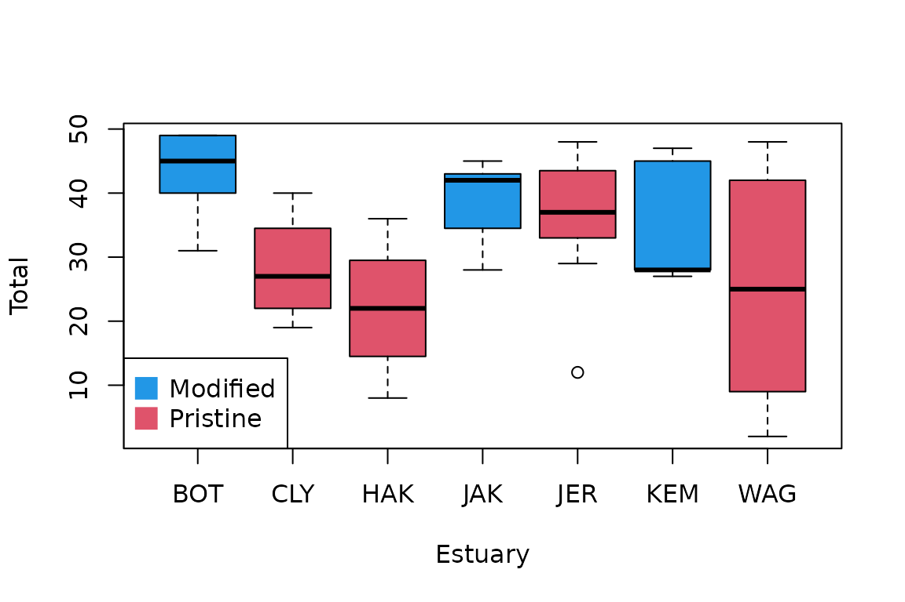
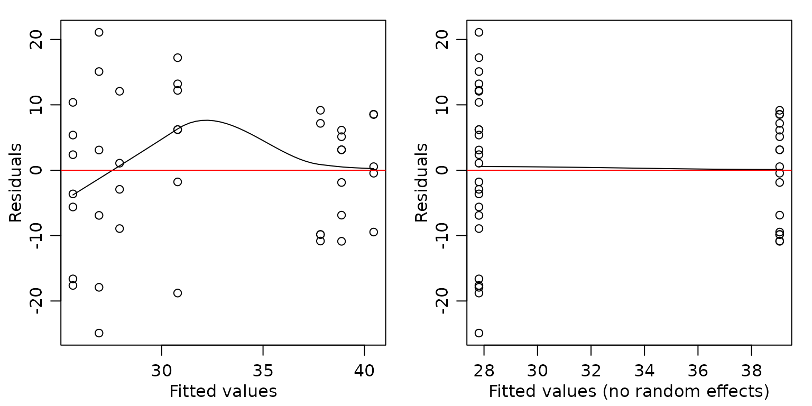

Chapter 6 -- Mixed effect models -- Exercise solutions and Code Boxes
David Warton
2022-08-25
Chapter6Solutions.RmdExercise 6.1: Effects of water pollution on subtidal marine micro-invertebrates
What factors are there? Fixed or random?
He samples in seven estuaries along the New South Wales coast (three of which are “Pristine”, four are “Modified”), and in each estuary, he takes 4-7 samples and counts the creepy crawlies therein.
Modification is a factor, taking levels “Pristine” and “Modified”
Estuary is a factor, taking seven levels. If these were sampled randomly, and we want to make inferences across all estuaries on the New South Wales coast, it oculd be treated as a random factor.
The 4-7 samples at each estuary are the replicates, so they shouldn’t be added to the model, variation in replicates will enter through the error term.
code for Fig 6.1
library(ecostats)
#> Loading required package: mvabund
data(estuaries)
plot(Total~Estuary,data=estuaries,col=c(4,2,2,4,2,4,2))
legend("bottomleft",legend=c("Modified","Pristine"),col=c(4,2),pch=15,pt.cex=2)
Code Box 6.1: Fitting a linear mixed model to the estuary data of Exercise 6.1
library(ecostats)
data(estuaries)
library(lme4)
#> Loading required package: Matrix
ft_estu = lmer(Total~Mod+(1|Estuary),data=estuaries)
summary(ft_estu)
#> Linear mixed model fit by REML ['lmerMod']
#> Formula: Total ~ Mod + (1 | Estuary)
#> Data: estuaries
#>
#> REML criterion at convergence: 314.4
#>
#> Scaled residuals:
#> Min 1Q Median 3Q Max
#> -2.2393 -0.7569 0.1553 0.7372 1.8962
#>
#> Random effects:
#> Groups Name Variance Std.Dev.
#> Estuary (Intercept) 10.68 3.268
#> Residual 123.72 11.123
#> Number of obs: 42, groups: Estuary, 7
#>
#> Fixed effects:
#> Estimate Std. Error t value
#> (Intercept) 39.053 3.237 12.065
#> ModPristine -11.243 4.287 -2.622
#>
#> Correlation of Fixed Effects:
#> (Intr)
#> ModPristine -0.755There is some evidence of an effect of Mod, since the estimated coefficient is more than double its standard error (so a 95% confidence interval would not cover zero). The effect appears to be a decrease in total abundance in pristine estuaries.
Code Box 6.2: Residual plots from a mixed model for Exercise 6.1
par(mfrow=c(1,2),mar=c(3,3,1,1),mgp=c(1.75,0.75,0))
ft_estu = lmer(Total~Mod+(1|Estuary),data=estuaries)
scatter.smooth(residuals(ft_estu)~fitted(ft_estu),
xlab="Fitted values",ylab="Residuals")
abline(h=0,col="red")
scatter.smooth(residuals(ft_estu)~predict(ft_estu,re.form=NA),
xlab="Fitted values (no random effects)",ylab="Residuals")
abline(h=0,col="red")
Code Box 6.3: Using anova to compare mixed effects models for the estuary data
ft_estu = lmer(Total~Mod+(1|Estuary),data=estuaries,REML=F)
ft_estuInt = lmer(Total~(1|Estuary),data=estuaries,REML=F)
anova(ft_estuInt,ft_estu)
#> Data: estuaries
#> Models:
#> ft_estuInt: Total ~ (1 | Estuary)
#> ft_estu: Total ~ Mod + (1 | Estuary)
#> npar AIC BIC logLik deviance Chisq Df Pr(>Chisq)
#> ft_estuInt 3 334.18 339.39 -164.09 328.18
#> ft_estu 4 330.14 337.09 -161.07 322.14 6.0396 1 0.01399 *
#> ---
#> Signif. codes: 0 '***' 0.001 '**' 0.01 '*' 0.05 '.' 0.1 ' ' 1There is some evidence of an effect of modification.
Code Box 6.4: Confidence intervals for parameters from a mixed effects model for the estuary data
confint(ft_estu)
#> Computing profile confidence intervals ...
#> 2.5 % 97.5 %
#> .sig01 0.000000 7.613337
#> .sigma 8.944066 14.084450
#> (Intercept) 32.815440 45.246159
#> ModPristine -19.461059 -2.994392Exercise 6.2: Fitting random effects with different variances
estuaries$isMod = as.numeric(estuaries$Mod=="Modified")
estuaries$isPri = as.numeric(estuaries$Mod!="Modified")
ft_estuDiff = lmer(Total~Mod+(0+isMod|Estuary)+(0+isPri|Estuary),data=estuaries,REML=F)
#> boundary (singular) fit: see help('isSingular')
summary(ft_estuDiff)
#> Linear mixed model fit by maximum likelihood ['lmerMod']
#> Formula: Total ~ Mod + (0 + isMod | Estuary) + (0 + isPri | Estuary)
#> Data: estuaries
#>
#> AIC BIC logLik deviance df.resid
#> 331.7 340.4 -160.8 321.7 37
#>
#> Scaled residuals:
#> Min 1Q Median 3Q Max
#> -2.2790 -0.7211 0.2024 0.6807 1.9407
#>
#> Random effects:
#> Groups Name Variance Std.Dev.
#> Estuary isMod 0.00 0.000
#> Estuary.1 isPri 11.39 3.375
#> Residual 118.84 10.901
#> Number of obs: 42, groups: Estuary, 7
#>
#> Fixed effects:
#> Estimate Std. Error t value
#> (Intercept) 39.111 2.569 15.22
#> ModPristine -11.303 3.806 -2.97
#>
#> Correlation of Fixed Effects:
#> (Intr)
#> ModPristine -0.675
#> optimizer (nloptwrap) convergence code: 0 (OK)
#> boundary (singular) fit: see help('isSingular')
BIC(ft_estu,ft_estuDiff)
#> df BIC
#> ft_estu 4 337.0880
#> ft_estuDiff 5 340.3501BIC suggests that we didn’t need a different variance term for each level of Mod. (It also estimated the cross-estuary variance to be zero for modified estuaries, leading to a warning in the output.)
Exercise 6.3: Bird exclusion and biological control
data(aphidsBACI)
str(aphidsBACI)
#> 'data.frame': 16 obs. of 5 variables:
#> $ Plot : Factor w/ 8 levels "1","2","3","4",..: 1 2 3 4 5 6 7 8 1 2 ...
#> $ Treatment: Factor w/ 2 levels "excluded","present": 2 2 2 2 1 1 1 1 2 2 ...
#> $ Time : Factor w/ 2 levels "X18.06.","X15.07.": 1 1 1 1 1 1 1 1 2 2 ...
#> $ counts : int 78 71 122 271 119 152 120 202 60 48 ...
#> $ logcount : num 4.37 4.28 4.81 5.61 4.79 ...OK so we are looking for a Treatment:Time interaction, but to account for repeated measures of each plot, we want a random effect for Plot in the model.
ft_aphids=lmer(logcount~Treatment*Time+(1|Plot),data=aphidsBACI)
#> boundary (singular) fit: see help('isSingular')
ft_aphidNull=lmer(logcount~Time+(1|Plot),data=aphidsBACI)
#> boundary (singular) fit: see help('isSingular')
anova(ft_aphidNull,ft_aphids)
#> refitting model(s) with ML (instead of REML)
#> Data: aphidsBACI
#> Models:
#> ft_aphidNull: logcount ~ Time + (1 | Plot)
#> ft_aphids: logcount ~ Treatment * Time + (1 | Plot)
#> npar AIC BIC logLik deviance Chisq Df Pr(>Chisq)
#> ft_aphidNull 4 28.204 31.294 -10.1020 20.204
#> ft_aphids 6 26.974 31.609 -7.4868 14.973 5.2304 2 0.07315 .
#> ---
#> Signif. codes: 0 '***' 0.001 '**' 0.01 '*' 0.05 '.' 0.1 ' ' 1Which gives us marginal evidence of an effect of bird exclusion of aphid counts.
Compare this to what we got when adding Plot as a fixed effect:
lm_aphids=lm(logcount~Plot+Treatment*Time,data=aphidsBACI)
anova(lm_aphids)
#> Analysis of Variance Table
#>
#> Response: logcount
#> Df Sum Sq Mean Sq F value Pr(>F)
#> Plot 7 0.8986 0.1284 0.4603 0.833357
#> Time 1 5.4675 5.4675 19.6038 0.004434 **
#> Treatment:Time 1 0.7397 0.7397 2.6522 0.154527
#> Residuals 6 1.6734 0.2789
#> ---
#> Signif. codes: 0 '***' 0.001 '**' 0.01 '*' 0.05 '.' 0.1 ' ' 1Interestingly, this \(P\)-value is a lot smaller.
summary(lm_aphids)
#>
#> Call:
#> lm(formula = logcount ~ Plot + Treatment * Time, data = aphidsBACI)
#>
#> Residuals:
#> Min 1Q Median 3Q Max
#> -0.5527 -0.1929 0.0000 0.1929 0.5527
#>
#> Coefficients: (1 not defined because of singularities)
#> Estimate Std. Error t value Pr(>|t|)
#> (Intercept) 4.6097 0.4175 11.041 3.28e-05 ***
#> Plot2 -0.1559 0.5281 -0.295 0.77776
#> Plot3 0.3378 0.5281 0.640 0.54600
#> Plot4 0.4433 0.5281 0.839 0.43336
#> Plot5 0.2127 0.5904 0.360 0.73105
#> Plot6 0.3530 0.5904 0.598 0.57179
#> Plot7 0.6593 0.5904 1.117 0.30685
#> Plot8 0.2631 0.5904 0.446 0.67154
#> Treatmentpresent NA NA NA NA
#> TimeX15.07. -1.5992 0.3734 -4.282 0.00519 **
#> Treatmentpresent:TimeX15.07. 0.8601 0.5281 1.629 0.15453
#> ---
#> Signif. codes: 0 '***' 0.001 '**' 0.01 '*' 0.05 '.' 0.1 ' ' 1
#>
#> Residual standard error: 0.5281 on 6 degrees of freedom
#> Multiple R-squared: 0.8094, Adjusted R-squared: 0.5235
#> F-statistic: 2.831 on 9 and 6 DF, p-value: 0.1091
summary(ft_aphids)
#> Linear mixed model fit by REML ['lmerMod']
#> Formula: logcount ~ Treatment * Time + (1 | Plot)
#> Data: aphidsBACI
#>
#> REML criterion at convergence: 20.2
#>
#> Scaled residuals:
#> Min 1Q Median 3Q Max
#> -1.2314 -0.4755 -0.2367 0.3187 1.8824
#>
#> Random effects:
#> Groups Name Variance Std.Dev.
#> Plot (Intercept) 0.000 0.0000
#> Residual 0.199 0.4461
#> Number of obs: 16, groups: Plot, 8
#>
#> Fixed effects:
#> Estimate Std. Error t value
#> (Intercept) 4.9817 0.2231 22.334
#> Treatmentpresent -0.2157 0.3155 -0.684
#> TimeX15.07. -1.5992 0.3155 -5.069
#> Treatmentpresent:TimeX15.07. 0.8601 0.4461 1.928
#>
#> Correlation of Fixed Effects:
#> (Intr) Trtmnt TX15.0
#> Trtmntprsnt -0.707
#> TimeX15.07. -0.707 0.500
#> Tr:TX15.07. 0.500 -0.707 -0.707
#> optimizer (nloptwrap) convergence code: 0 (OK)
#> boundary (singular) fit: see help('isSingular')We get the same point estimate for the Treatment:Time effect, but the standard error is slightly smaller in the random effects model.
Exercise 6.4: Estuary data in different zones
data(estuaryZone)
cols=c("blue","red","lightblue","pink")
plot(Total~interaction(Estuary,Zone),data=estuaryZone,col=cols[c(1,2,2,1,2,1,2,3,4,4,3,4,3,4)])
legend("bottomright",legend=c("Mod-Inner","Prist-Inner","Mod-Outer","Pris-Outer"),col=cols,pch=15,pt.cex=2)
It looks like there is an effect of Modification, not sure if there is an interaction (the effect seems more striking in Outer than Inner zones)
par(mfrow=c(1,2),mar=c(3,3,1,1),mgp=c(1.75,0.75,0))
library(lme4)
lme_MZ = lmer(Total~Zone*Mod + (Zone|Estuary), data=estuaryZone )
#> boundary (singular) fit: see help('isSingular')
scatter.smooth(residuals(lme_MZ)~fitted(lme_MZ),
xlab="Fitted values",ylab="Residuals")
abline(h=0,col="red")
scatter.smooth(residuals(lme_MZ)~predict(lme_MZ,re.form=NA),
xlab="Fitted values (no random effects)",ylab="Residuals")
abline(h=0,col="red")
There is a suggestion of less total abundance as fitted values increase, which is super-weird. But it’s not too alarming…
lme_MplusZ = lmer(Total~Zone+Mod + (Zone|Estuary), data=estuaryZone )
#> boundary (singular) fit: see help('isSingular')
anova(lme_MplusZ,lme_MZ)
#> refitting model(s) with ML (instead of REML)
#> Data: estuaryZone
#> Models:
#> lme_MplusZ: Total ~ Zone + Mod + (Zone | Estuary)
#> lme_MZ: Total ~ Zone * Mod + (Zone | Estuary)
#> npar AIC BIC logLik deviance Chisq Df Pr(>Chisq)
#> lme_MplusZ 7 595.91 612.31 -290.95 581.91
#> lme_MZ 8 597.14 615.89 -290.57 581.14 0.7618 1 0.3828No evidence of an interaction between Zone and Modification. Testing for a Mod main effect:
lme_Z = lmer(Total~Zone + (Zone|Estuary), data=estuaryZone )
anova(lme_Z,lme_MplusZ)
#> refitting model(s) with ML (instead of REML)
#> Data: estuaryZone
#> Models:
#> lme_Z: Total ~ Zone + (Zone | Estuary)
#> lme_MplusZ: Total ~ Zone + Mod + (Zone | Estuary)
#> npar AIC BIC logLik deviance Chisq Df Pr(>Chisq)
#> lme_Z 6 608.43 622.50 -298.22 596.43
#> lme_MplusZ 7 595.91 612.31 -290.95 581.91 14.529 1 0.000138 ***
#> ---
#> Signif. codes: 0 '***' 0.001 '**' 0.01 '*' 0.05 '.' 0.1 ' ' 1There is strong evidence that total abundance is different between Modified and Pristine estuaries. The boxplot suggests abundance is higher in Modified estuaries, and looking at the data, this appears to be mostly due to high counts of Balanus.variegatus, especially in outer modified zones.
Code Box 6.6: Using the parametric bootstrap to compute the standard error of the Mod fixed effect in Exercise 6.1.
nBoot=500
bStat=rep(NA,nBoot)
ft_estu = lmer(Total~Mod+(1|Estuary),data=estuaries)
for(iBoot in 1:nBoot)
{
estuaries$TotalSim=unlist(simulate(ft_estu))
ft_i = lmer(TotalSim~Mod+(1|Estuary),data=estuaries)
bStat[iBoot] = fixef(ft_i)[2]
}
sd(bStat) #standard error of Mod effect
#> [1] 4.326651And if we compare this to the standard error from summary:
summary(ft_estu)
#> Linear mixed model fit by REML ['lmerMod']
#> Formula: Total ~ Mod + (1 | Estuary)
#> Data: estuaries
#>
#> REML criterion at convergence: 314.4
#>
#> Scaled residuals:
#> Min 1Q Median 3Q Max
#> -2.2393 -0.7569 0.1553 0.7372 1.8962
#>
#> Random effects:
#> Groups Name Variance Std.Dev.
#> Estuary (Intercept) 10.68 3.268
#> Residual 123.72 11.123
#> Number of obs: 42, groups: Estuary, 7
#>
#> Fixed effects:
#> Estimate Std. Error t value
#> (Intercept) 39.053 3.237 12.065
#> ModPristine -11.243 4.287 -2.622
#>
#> Correlation of Fixed Effects:
#> (Intr)
#> ModPristine -0.755we see the estimated standard error is 4.287348, which is pretty close to the value we got by simulation.
Code Box 6.7: A parametric bootstrap to test for an effect of Estuary in Exercise 6.1.
ft_noestu = lm(Total~Mod,data=estuaries)
library(ecostats)
anovaPB(ft_noestu,ft_estu,n.sim=99)
#> Error in x$terms : $ operator not defined for this S4 class
#> Warning in Ops.factor(1, Estuary): '|' not meaningful for factors
#> df deviance LRT Pr(>LRT)
#> ft_noestu 3 322.1963 NA NA
#> ft_estu 4 314.3646 7.831769 0.27So we have no evidence of an Estuary effect.
Exercise 6.6: Accurate inferences about the estuary data
Use the parametric bootstrap to get a formal test for a zone:mod interaction.
We can just run the old analysis and change from anova to anovaPB:
lme_MZ = lmer(Total~Zone*Mod + (Zone|Estuary), data=estuaryZone, REML=FALSE )
lme_MplusZ = lmer(Total~Zone+Mod + (Zone|Estuary), data=estuaryZone, REML=FALSE )
anovaPB(lme_MplusZ,lme_MZ,n.sim=99)
#> Warning in Ops.factor(Zone, Estuary): '|' not meaningful for factors
#> Data: estuaryZone
#> Models:
#> objectNull: Total ~ Zone + Mod + (Zone | Estuary)
#> object: Total ~ Zone * Mod + (Zone | Estuary)
#> npar AIC BIC logLik deviance Chisq Pr(>Chisq)
#> objectNull 7 595.91 612.31 -290.95 581.91
#> object 8 597.14 615.89 -290.57 581.14 0.7618 0.44There is no evidence of an interaction.
(Ignore the warnings in the output – this is random stuff that was thrown up in bootstrap resamples that didn’t get a good fit.)
How do results compare to those from when you were using the anova function?
Results are similar to what we saw before. The only thing that is different is the \(P\)-value, but it is very similar (suggesting there was no need for a parametric bootstrap here!).
This would all have been so much easier if there wasn’t a random effect in the model… do we really need Estuary in there?
lme_MZ = lmer(Total~Zone*Mod + (Zone|Estuary), data=estuaryZone, REML=FALSE )
lme_MZnoest = lm(Total~Zone+Mod, data=estuaryZone)
anovaPB(lme_MZnoest,lme_MZ,n.sim=99)
#> Error in x$terms : $ operator not defined for this S4 class
#> Warning in Ops.factor(Zone, Estuary): '|' not meaningful for factors
#> df deviance LRT Pr(>LRT)
#> lme_MZnoest 4 582.8273 NA NA
#> lme_MZ 8 581.1436 1.683641 0.35We have no evidence of an Estuary effect either!